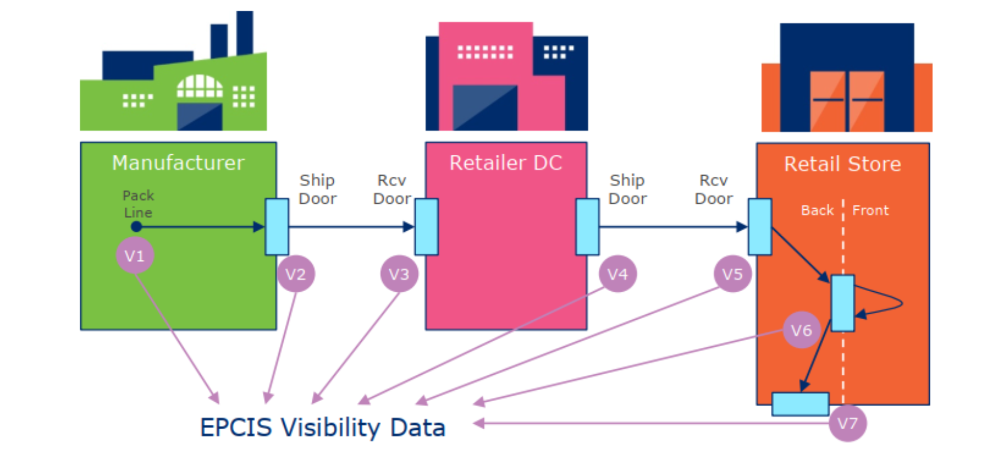

EPCIS
Introduction & history
EPCIS is an open ISO/IEC/GS1 standard that allows visibility data information to be captured and shared within an organization or between multiple organizations in the form of an event. The EPCIS standard is beneficial to organizations that move products between stages within the same organization as well as between organizations. The EPCIS event data can be used for all physical objects such as assets, products, logical units, reusable transport items, etc., or can also be used for digital objects such as music downloads, electronic books, electronic coupons, subscriptions, etc. The EPCIS standard was designed to improve cooperation between trading partners by exchanging comprehensive information on physical and digital items. The initial version of EPCIS 1.0 was released at the beginning of 2007. Later, EPCIS 1.1 and 1.2 were released in 2014 and 2016 respectively with various enhancements. The latest version, EPCIS 2.0, is published in June 2022 with a lot of significant enhancements.
The main objective of the EPCIS data is to provide visibility information within a specific business process. The following figure 1 describes how EPCIS data may be generated within a simple business process.

Figure 1: Generation of EPCIS events in a simple business process.
Above figure depicts a simplified business process in which a manufacturer produces an item, which is then packed and shipped to the Retailer DC (Distribution Center). The item is received by Retailer DC, who then sends it to the appropriate Retail Store. The item is received by the retail store and moved to a sales area where a consumer can purchase it. The simplified flow of goods can consist of the following critical tracking events: packing, shipping, receiving the items, etc. At every step within these business processes, an EPCIS event is created. This EPCIS event provides information on what exactly was occurring to the items at that particular step. The entirety of all these EPCIS events provides a complete picture of the whole business process.
EPCIS events consist of context information comprising the five different dimensions What, When, Where, Why, and How. Each of these dimensions consists of multiple fields that make up the event information. Each dimension is independent of one another and not mandatory to include all dimensions/fields of dimensions in the EPCIS event. For example, the following pieces of information are produced for four dimensions when a product is shipped from the manufacturer to retail DC in the V2 business process mentioned above:
-
What: It contains what items or containers were sent to DC.
-
When: It contains the date-time information when the items were shipped, along with the respective time zone offset information.
-
Where: It contains information about the location from where the shipment was sent. Also, where the items are expected to be after the event has occurred.
-
Why: It contains the business context of the information. For example, the business step in this particular event is shipping.
Areas of application for EPCIS
EPCIS can stitch together individual events that have occurred over time in a particular supply chain within an organization or across multiple organizations. Hence, EPCIS provides many applications, such as:
-
Tracking: An organization can find exactly where the objects are present within the supply chain using the most recent EPCIS event.
-
Tracing: An organization can track the objects to their origin using all EPCIS events associated with the particular object.
-
Analysing: All the EPCIS events collected over a particular time can be interpreted in a specific business context.
-
Automation: EPCIS events can trigger various other business processes in real-time.
-
Verification: Comparison of the real-time status of the object using the current EPCIS event and the anticipated state of the object.
Benefits of EPCIS
EPCIS can be used in various industries such as automotive, healthcare, food services, transport, retail, etc. It provides many benefits to organizations and customers, depending on the type of industry sector. Following are some most common beneficial aspects of the EPCIS standard in various industry sectors:
• Identify the origin of the object to support anti-counterfeit measures.
• Identify a chain of custody for an object along with date and time information.
• Validation of digital coupons in real-time.
• Recognise the freshness of the product.
• Provide notification on various attributes such as location, timing, status, quantity, or quality of the product in real-time.
• Ensure that items reach the consumers at the right location and time.
• Increase consumer protection.
OpenEPCIS
benelog GmbH & Co. KG is an organization located in Kerpen, Germany that focuses on development of software and system architecture. The developed software and applications operate effectively and efficiently in the fields of big data processing, complex, scalable, cloud-based environments. benelog GmbH & Co. KG designed and developed OpenEPCIS implementation based on the EPCIS standard. We are well versed with the ins and outs of the EPCIS standard because we are part of the GS1 core member group that assisted in standardizing EPCIS 2.0 and continue to work on various implementations related to EPCIS. We have designed and developed several open source tools and projects associated with EPCIS standard as part of our contribution to the EPCIS community, which any entity can utilize for their use (Note: more on the tools and projects discussed later in this documentation).
Since EPCIS documents might include thousands or millions of events, it is necessary to handle them effectively to ensure that memory utilization and the system on which they are executing are not overworked. We at OpenEPCIS team, consistently uses the latest cutting-edge processes and technologies to develop all the products and services. As a result, all our developments function effectively and efficiently even while managing enormous amounts of data without experiencing any performance problems. The OpenEPCIS team also makes sure that all our developed tools/projects are available in a various formats so users have a choice of alternatives to pick from and are free to select the best option depending on their needs, knowledge, and ease of access.
If any organization wishes to implement the EPCIS standard within their system then we encourage them to make use of the open-source reference implementation OpenEPCIS, because purchasing commercial solutions can be expensive and creating a custom system can take a lot of time and effort. Based on the most recent EPCIS 2.0, OpenEPCIS has been developed utilizing cutting-edge technology and, as previously mentioned, is highly scalable. Using the current standards, tools, and knowledge, we assist enterprises of all types and scales in seamlessly and successfully integrating the EPCIS standard.
Contact
We are delighted to talk if you have any questions, suggestions, or would want to work with us on any projects. Send us an email at info@benelog.com.